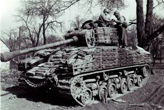

M4 Sherman
The M4 Sherman was an American medium tank that was used by most
allied countries during World War II. It was designed in 1941 after the American tanks that were
used in
the early stages of the war were found to be inadequate against the German tanks. The Sherman was
produced at eleven factories across the United States as well as produced in the United Kingdom.
From these factories, approximately 50,000 of these tanks were produced. It was armed with a 75mm
main gun plus two machine guns: one mounted on the turret and one mounted next to the driver. The
tank was also equipped with a large engine, which allowed it to travel at speeds of up to 30 miles
per hour and a range of between 100 and 150 miles depending on the variant. The M4 Sherman was a
reliable tank, however one downside it faced was that it was not as heavily armored as the German
tanks. Because of this, many of the crews would add additional armor to the sides of the tank; the
armor would include sandbags, track links, trees, and sometimes even concrete. Unsurprisingly, these
added a considerable amount of weight but only provided minimal protection.
The Sherman was
produced at eleven factories across the United States as well as produced in the United Kingdom.
From these factories, approximately 50,000 of these tanks were produced. It was armed with a 75mm
main gun plus two machine guns: one mounted on the turret and one mounted next to the driver. The
tank was also equipped with a large engine, which allowed it to travel at speeds of up to 30 miles
per hour and a range of between 100 and 150 miles depending on the variant. The M4 Sherman was a
reliable tank, however one downside it faced was that it was not as heavily armored as the German
tanks. Because of this, many of the crews would add additional armor to the sides of the tank; the
armor would include sandbags, track links, trees, and sometimes even concrete. Unsurprisingly, these
added a considerable amount of weight but only provided minimal protection.

Despite this, the M4 Sherman was still considered an extremely effective tank. These issues eventually led to the development of many variants of the Sherman, including several that were armed with more powerful guns. Finally, near the end of the war, the M4 Sherman was replaced by the M26 Pershing, which solved the issue of armor and introduced a 90mm gun. Overall, even with its many flaws, the M4 Sherman is still considered one of the most iconic tanks of World War II.References:
https://www.britannica.com/technology/Sherman-tank